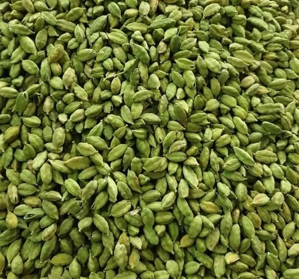

About Cardamom
Green Cardamom is prized for its strong aroma, slightly sweet taste, and therapeutic properties. JontyMart supplies bold, green, 6mm+ graded pods for export purposes. Our cardamom is handpicked, sun-dried, and packed for freshness and global delivery.
Key Features
- Intensely aromatic and flavorful
- Graded 6mm+, 7mm+, 8mm+ as per order
- Free from artificial coloring or flavoring
- Packed in moisture-proof pouches and boxes
- Available in whole pods or seeds form
Applications
- Used in sweets, chai (tea), rice dishes, and herbal blends
- Popular in Middle Eastern, Indian, and Scandinavian cuisines
- Widely used in Ayurveda and perfumery
Why Choose JontyMart?
- Sourced from Kerala and Coorg plantations
- Sortex cleaned and export-quality grading
- Private label and bulk orders supported
- Quick documentation and global delivery
Storage Instructions
Keep in airtight, moisture-free containers. Store in cool, dark areas. Best before 12–15 months from the packing date.